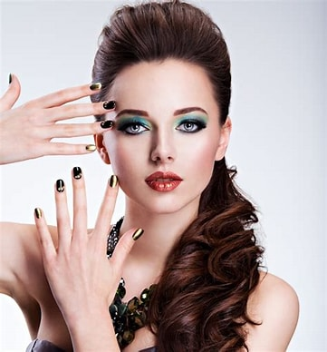
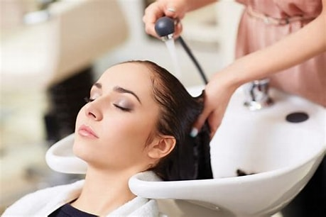
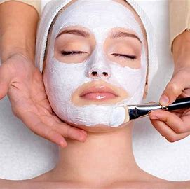

A beauty salon or beauty parlor is an establishment that provides cosmetic treatments for people. Other variations of this type of business include hair salons, spas, day spas, and medical spas.
Beauty treatments
Haircut is generally offered in beauty salons.Massage for the body is a beauty treatment, with various techniques offering benefits to the skin (including the application of beauty products) and increasing mental well-being. Hair removal is offered at some beauty salons through treatments such as waxing and threading. Some beauty salons also style hair instead of requiring clients to go to a separate hair salon. Some also offer sun tanning via tanning beds.
Another popular beauty treatment specific to the face is known as a Facial. The perceived effects of a facial mask treatment include revitalization, healing, or refreshment of the skin. They may yield temporary benefits depending on environmental, dietary, and other skincare factors. Although customers seek out these services for anti-aging or anti-inflammatory results, there is little to no objective evidence that there are any long-term benefits to the various available facial treatments.[3]
Specialized beauty salons known as nail salons offer treatments such as manicures and pedicures for the nails. [citation needed] A manicure is a treatment for the hands that involves trimming and filing of the fingernails and softening the cuticles in preparation for the application of nail polish. A pedicure is a treatment for the feet that involves trimming and filing of the toenails in preparation for the application of nail polish, as well as the softening or removal of calluses.
How we got started?
A group of Non-Resident Indian (NRI) women has collaborated to offer exceptional hair and beauty services to the Kokapet community, starting with our first salon. Our vision for ‘obsessed’ is to be the best in Hyderabad in the long run.
In our commitment to excellence, we've chosen to avoid franchising and instead focus on establishing our own salons. This decision allows us to steer clear of managing franchises and concentrate our efforts on delivering outstanding services. We’re pleased to announce that, in line with our vision, we’ve opened our second branch in Alkapur Township, expanding our reach while maintaining our commitment to quality.
This strategic expansion aims to target Hyderabad as a whole, and we’re dedicated to providing top-notch services to the community in both Kokapet and Alkapur Township. Your complete satisfaction with our salon services remains our utmost priority, and we look forward to serving you in multiple locations across Hyderabad.


Menu
| Services | ||
|---|---|---|
| Treading | Eye Brows | 30/- |
| Upper lip | 10/- | |
| Chin | 10/- | |
| Face | 150/- | |
| Hair Setting | Rod Rolling | 200/- |
| Hot Rolling | 300/- | |
| Hair Wash | 100/- | |
| Hair | Henna Normal | 300/- |
| Henna Full | 400/- | |
| Oil massage | 250/- | |